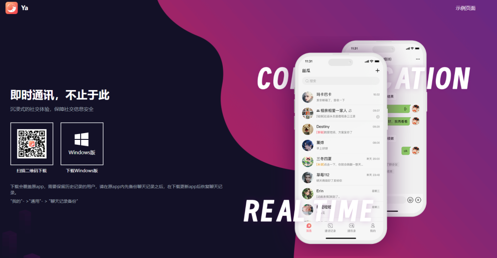

丝瓜聊天可以撤回消息吗？
发布时间：2025-01-25
是的，丝瓜聊天支持撤回消息功能。用户可以在发送消息后的一定时间内撤回该消息，撤回后对方无法看到该消息内容。撤回消息的时间通常较短，具体时限会根据平台的设置有所不同。该功能主要用于避免误发送或修改错误内容。

丝瓜聊天消息撤回功能详解
如何撤回发送的消息
- 长按消息进行撤回：在丝瓜聊天中，撤回消息的方式很简单。用户只需在聊天窗口中长按要撤回的消息，然后在弹出的选项中选择“撤回”按钮，系统会立即将该消息从对方的聊天界面中删除。
- 撤回范围：撤回功能不仅适用于文本消息，还可以撤回发送的图片、视频和文件等媒体内容。用户可以在聊天记录中长按这些媒体内容，选择撤回进行删除。
- 撤回后的通知：当用户成功撤回一条消息时，对方会看到一条“此消息已撤回”的提示信息。这意味着虽然消息已被删除，但对方仍然会知晓该消息曾经存在。
撤回消息的时间限制
- 撤回时间限制：在丝瓜聊天中，消息撤回有一定的时间限制。一般来说，用户可以在消息发送后的几分钟内撤回。具体的时间限制可能会根据平台的设置有所不同，但通常在5到10分钟之间。
- 超过时间无法撤回：如果超过了时间限制，用户将无法撤回消息。因此，在发送消息时需要特别注意内容的准确性，以避免错发信息。
- 不同设备时间同步：虽然撤回消息的时间限制是根据发送时间来计算的，但用户在不同设备上的操作可能会存在小的时间差异。为了确保消息及时撤回，建议尽早操作。
丝瓜聊天撤回消息的使用场景
什么情况下需要撤回消息
- 误发送消息：当用户不小心发送了错误的内容，例如发送错了图片、文件或文本，撤回消息是一种常见的操作。通过撤回，可以避免错误信息被对方看到或误解。
- 发送信息后发现错别字或语法错误：在发送消息后，如果发现有明显的错别字或语法错误，撤回并重新发送更正后的内容是一个快速有效的解决方案。
- 发送不当或敏感信息：有时用户可能不小心发送了敏感或不适当的内容，撤回消息可以有效防止这些内容对他人造成困扰或伤害，确保个人隐私和社交礼仪。
撤回消息是否能完全删除
- 对方仍能看到撤回痕迹：虽然撤回消息可以从对方的聊天界面中删除，但对方会看到一条“此消息已撤回”的提示。这意味着消息内容被撤回，但不会完全消失。
- 撤回后消息内容不会恢复：一旦消息被成功撤回，原始消息的内容无法恢复，用户也无法再次查看已撤回的内容。
- 撤回并不影响聊天记录：即便撤回了某条消息，聊天记录中的删除痕迹依然保留。若用户重新查阅聊天记录，仍会看到撤回的提示，但内容本身已经消失。因此，撤回消息无法做到完全删除所有痕迹。

丝瓜聊天撤回消息的技术原理
撤回消息的后台处理方式
- 消息标记为已撤回：在用户执行撤回操作时，后台会对该消息进行标记，更新其状态为“已撤回”。这样，消息的内容就不会显示在对方的界面中，而是直接被替换为“此消息已撤回”的提示。
- 同步更新聊天记录：后台系统会通过实时同步机制，将用户的撤回操作通知给所有参与该对话的设备。当用户撤回一条消息时，其他设备会立刻收到更新，保证所有人都能够看到相同的聊天内容。
- 数据清除：虽然撤回的消息不会完全消失，但后台会确保消息的正文内容从数据库中被清除，只留下撤回的操作记录。这有助于避免消息数据的泄漏或滥用。
撤回消息后的显示效果
- 撤回痕迹提示：撤回消息后，聊天界面上会显示“此消息已撤回”的提示，清晰标明该消息曾经存在过但被撤回。这个提示同样会出现在所有用户的聊天界面中。
- 消息格式与布局更新：撤回的消息被替换为“此消息已撤回”后，聊天界面会自动调整布局，以确保界面干净整洁，用户不会因为撤回消息而产生排版问题。
- 时间与撤回的同步：在显示撤回提示时，平台会同步显示撤回消息的时间，保持消息发送与撤回的时间一致。这有助于确保对话的时间线不被打乱，用户可以清楚地看到消息撤回的具体时刻。

丝瓜聊天撤回消息与删除消息的区别
撤回消息与删除消息的不同
- 撤回消息的功能：撤回消息是在发送后的一定时间内，将消息从接收方的聊天界面删除，但接收方仍会看到“此消息已撤回”的提示。这意味着消息内容虽然消失，但仍留有撤回的痕迹。
- 删除消息的功能：删除消息是将消息从自己的聊天记录中彻底移除，其他方则不会看到任何撤回或删除的提示。删除消息通常用于个人账户的清理，而撤回则是针对发送给他人的即时修正。
- 操作时限：撤回消息通常有时间限制，用户只能在发送后的一段时间内撤回，而删除消息则没有时间限制，用户可以随时删除自己的聊天记录。
如何选择使用撤回或删除
- 撤回适用于误发送消息：如果消息已经发送出去，但发现内容不当或错误，使用撤回功能是最合适的选择。撤回可以让对方看到该消息曾经存在过，同时避免其内容被进一步传播。
- 删除适用于清理个人记录：如果你只是想从自己设备上移除某些信息，而不影响对方的聊天记录，删除消息会是更好的选择。删除操作不会在对方界面上留下任何提示。
- 综合使用场景：在一些情况下，用户可以选择先撤回消息，确保消息内容不再显示在对方界面上。若之后需要彻底清理自己的聊天记录，可以使用删除功能，做到更彻底的个人信息清理。

丝瓜聊天撤回消息对方能看到吗
对方是否能察觉消息被撤回
- 撤回痕迹提示：在丝瓜聊天中，撤回消息后，对方会看到“此消息已撤回”的提示，明确知晓该消息曾经存在过但被撤回。虽然消息本身消失，但撤回的痕迹依然可见。
- 不完全隐蔽：因此，撤回消息并不意味着对方完全无法察觉，撤回操作会留下可见的记录。对方无法查看撤回的内容，但会知道某条消息曾经发送并被撤回。
- 撤回效果依赖于网络同步：如果对方没有实时接收到该消息（例如网络延迟），他们可能在看到聊天记录时才发现某条消息被撤回，尤其是当撤回的时间较长时。
撤回消息后的提示通知
- 撤回提示信息：当用户撤回一条消息后，对方的聊天界面会显示“此消息已撤回”的通知。这是平台设计的标准流程，确保双方都知晓消息曾经存在且被撤回。
- 撤回时间的提示：除了提示消息已被撤回，平台还可能显示撤回消息的时间戳，告诉对方该消息被撤回的具体时间。这样可以让对方清楚了解撤回操作发生的时刻。
- 撤回不影响聊天流程：尽管撤回消息会显示通知，整体的聊天流程并不会中断。对方继续参与对话时，撤回的消息会被替换为“已撤回”的提示，保持聊天界面的正常流畅性。
撤回消息后对方能看到什么？
撤回消息后，丝瓜聊天会显示“此消息已撤回”的提示，提醒对方该消息曾经发送过，但已经被撤回。虽然消息内容被删除，但撤回操作的痕迹仍然可见。
撤回消息的时间限制是多久？
丝瓜聊天对消息撤回有时间限制，通常是在发送后的5到10分钟内可以撤回。一旦超过这个时间限制，用户就无法再撤回消息，只能选择删除自己设备上的记录。
撤回消息后，消息内容能恢复吗？
撤回后，消息内容无法恢复。对方将无法查看撤回的内容，也无法恢复已经撤回的消息。撤回操作只是删除消息的显示，并没有将其完全从聊天记录中抹去。